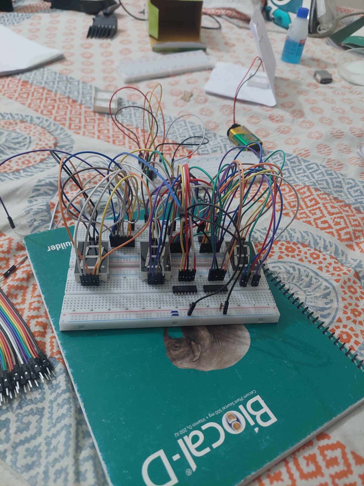

DIGITAL ELECTRONICS / SEQUENTIAL LOGIC
Digital Voting System Using Sequential Logic Circuits
A hardware voting system using counters, seven-segment decoders, debounced switches and comparator logic to count and compare votes in real time.
COURSE
EEE 3104 — Digital Electronics-1 Lab
SYSTEM
Sequential Logic Voting
DISPLAY
Seven-Segment Tally
COMPARISON
74HC85 Logic
01 / OVERVIEW
Project Overview
A sequential-logic voting system that registers, counts, displays and compares candidate votes in real time. Debounced switches feed counters, decoders drive seven-segment displays and comparator logic identifies the highest count.
02 / PROJECT MEDIA
Hardware & Circuit


03 / OBJECTIVES
Project Objectives
- Design a digital voting system using logic circuits.
- Implement counting for each candidate.
- Display vote counts on seven-segment displays.
- Use debounced switches for accurate registration.
04 / COMPONENTS
Main Components
05 / WORKING PRINCIPLE
Voting Logic
Voter presses the candidate button.
Debounced input creates one clock pulse.
74LS90 increments the candidate count.
Counter outputs the count in BCD.
74LS47 converts BCD to seven-segment signals.
Display shows the updated tally.
74HC85 compares candidate counts.
Reset clears all counters.
06 / OBSERVATIONS
Testing & Observations
- Votes were recorded accurately.
- Seven-segment displays showed correct values.
- Debouncing prevented false multiple counts.
- Reset cleared all counters.
- Comparator identified the highest vote count correctly.
07 / LIMITATIONS
Limitations
- No voter authentication.
- Limited scalability for many candidates.
- No non-volatile vote retention.
- Best suited to small-scale demonstration.
08 / IMPROVEMENTS
Future Improvements
- Use a microcontroller or FPGA for scalability.
- Add voter authentication.
- Add EEPROM/non-volatile storage.
- Extend toward secure remote voting.